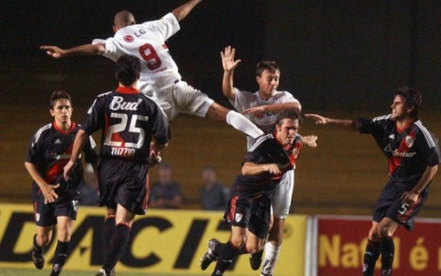
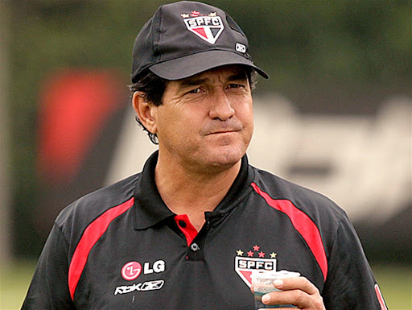
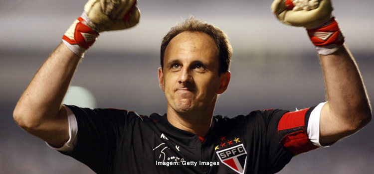
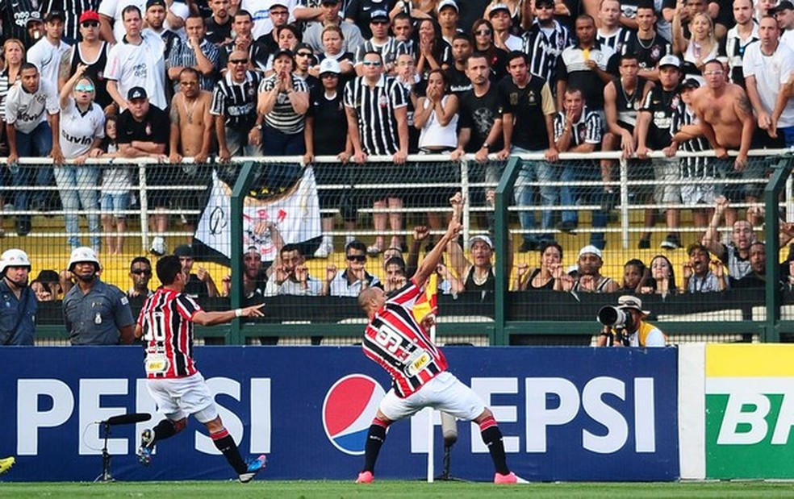

Rogério Ceni
Borges e Dagoberto
Rogério Ceni
Luis Fabiano

Telê Santana e Raí
Muricy Ramalho

Muricy Ramalho
Rogério Ceni

Luis Fabiano

Voltar


/s.glbimg.com/es/ge/f/original/2018/07/26/rai_e_tele_spfc.jpg)